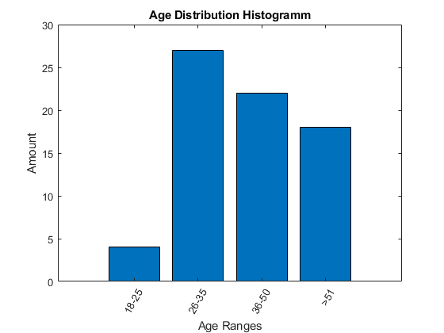

T = readtable("..\..\Speech_quality_crowdsourcing_dataset.xlsx","Sheet","CS participants");
this_year = year(datetime('now'));
years = T.BirthYear';
age = [];
for i=1 : length(years)
years(i)= this_year-years(i);
end
ages = years;
ranges = [ 18, 26 , 36, 51 inf];
[bincounts,ind] = histcounts(ages,ranges);
figure(1);
binranges_names = [];
for i=1: length(ranges)-1
str=ranges(i)+"-"+num2str(ranges(i+1)-1);
binranges_names{i} = str;
end
binranges_names{end}=sprintf('>%d',ranges(end-1));
centers=[1,2,3,4];
bar(centers,bincounts);
xticks(centers);
set(gca,'XTickLabels',binranges_names);
set(gca,'XTickLabelRotation',60);
title('Age Distribution Histogramm');
xlabel('Age Ranges')
ylabel('Amount')
Warning: Column headers from the file were modified to make them valid MATLAB
identifiers before creating variable names for the table. The original column
headers are saved in the VariableDescriptions property.
Set 'PreserveVariableNames' to true to use the original column headers as table
variable names.
